海思AI开发 [3]：交叉编译OpenCV
下载
下载指定版本的opencv-4.1.0和opencv_contrib-4.1.0的源码
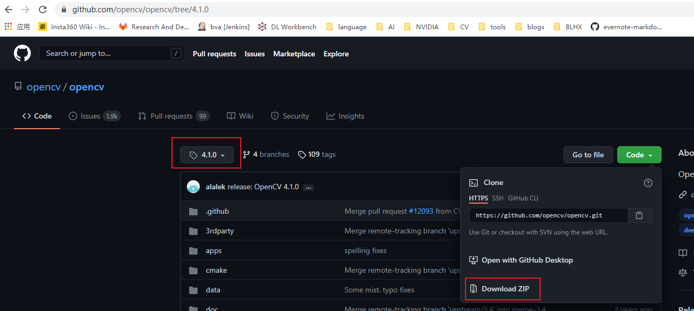
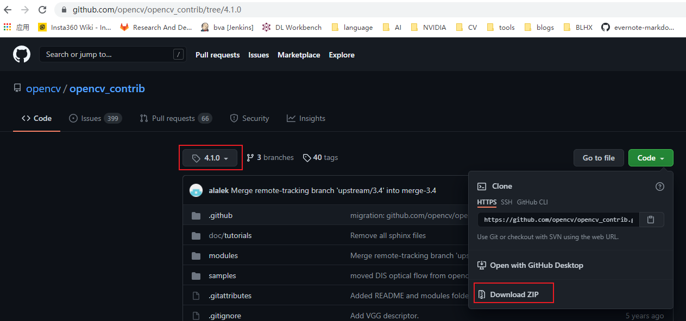
下载的压缩包拷贝到linux服务器上，解压
安装cmake-gui
sudo apt-get install cmake-gui |
运行cmake-gui
选择source code路径和build路径，点击Configure
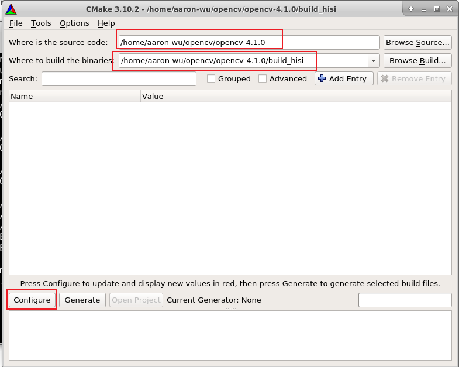
选择交叉编译配置选项
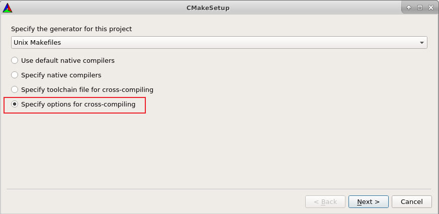
配置c和c++的编译器
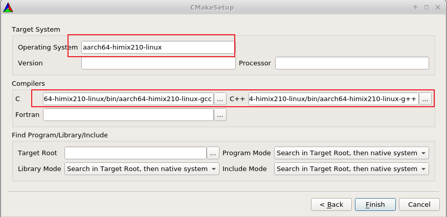
点击finish会进行初步的配置
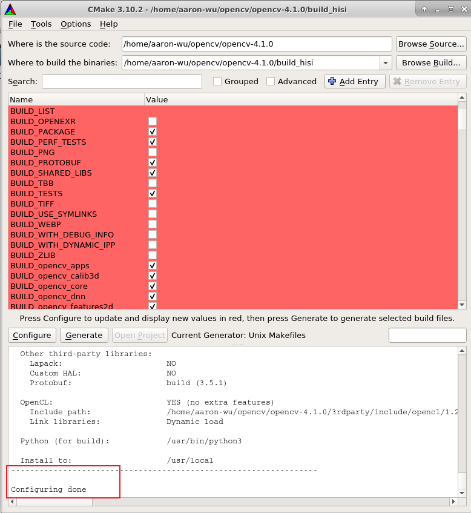
进一步配置
配置build类型
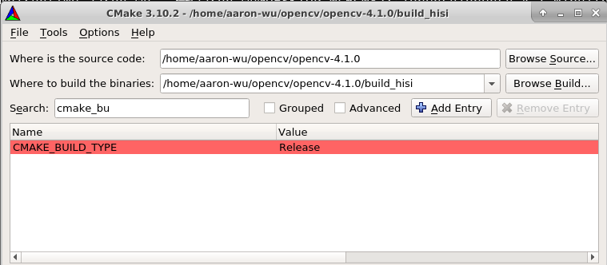
配置安装路径
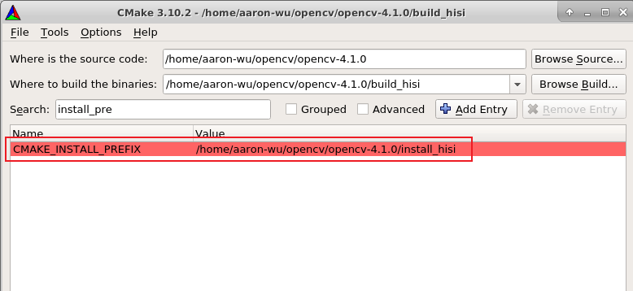
将opencv_contrib模块也编译进来
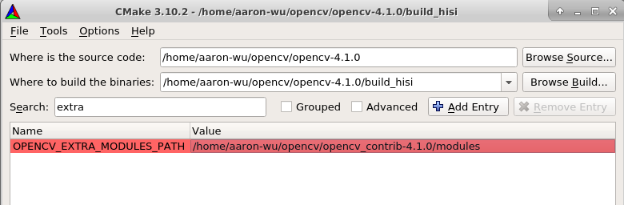
保险起见，添加交叉编译器的根目录
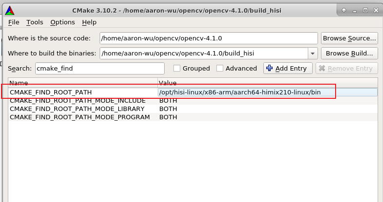
勾选BUILD_opencv_world
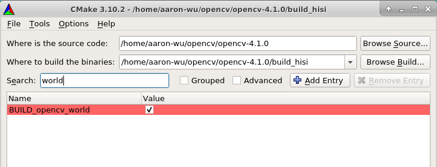
再次点击Configure，开始解问题吧 ( :
问题1 缺少boostdesc_bgm.i
cmake尝试下载该文件，但网络问题卡住
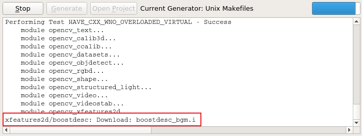
打开opencv_contrib-4.1.0\modules\xfeatures2d\CMakeLists.txt，注释掉下载的命令
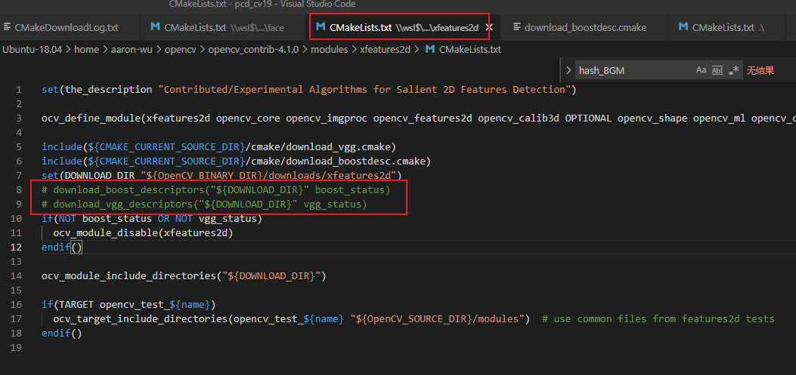
该模块也会因此被disable，目前用不到，先关了吧
也可以自行下载对应的文件放到对应的位置，这里先不管了(是福不是祸，是祸躲不过 ( : )
问题2 缺少face_landmark_model.dat
打开opencv_contrib-4.1.0\modules\face\CMakeLists.txt，注释掉下载的命令
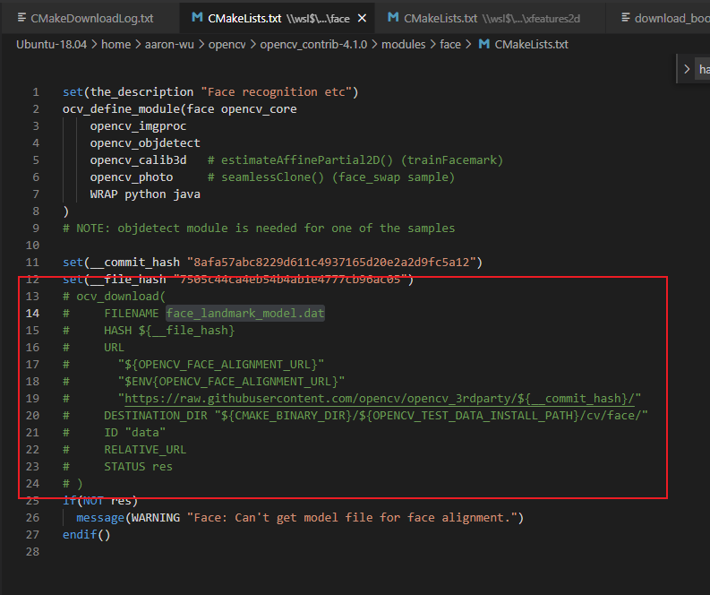
同样，影响暂时未知
再次点击Configure，Configuring done
点击Generate，Generating done
开始make
cd build_hisi |
问题1
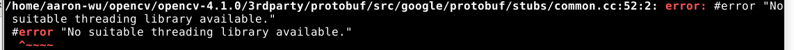
在common.cc中增加宏定义#define HAVE_PTHREAD
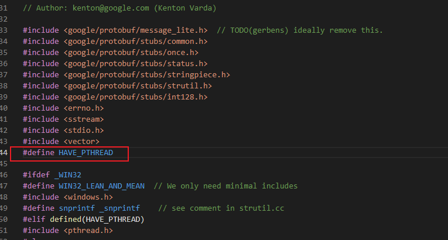
问题2 类型转换错误
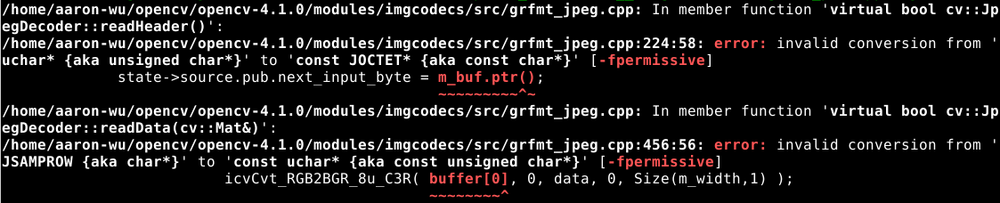
打开opencv-4.1.0\build_hisi\CMakeCache.txt，添加 -fpermissive 编译选项
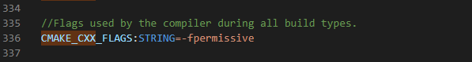
问题3 缺少boostdesc_bgm.i
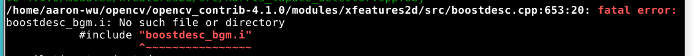
-
终究逃不掉，自己下载吧
-
打开
\opencv_contrib-4.1.0\modules\xfeatures2d\cmake\download_boostdesc.cmake，参照里面的下载内容打开url，右键另存为文件。
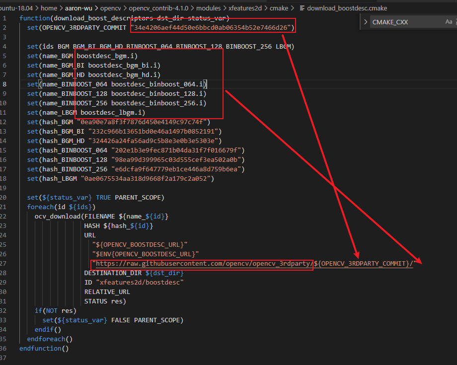
- 同理打开
\opencv_contrib-4.1.0\modules\xfeatures2d\cmake\download_vgg.cmake，下载所需内容 - 将这些下载的文件拷贝到
opencv_contrib-4.1.0\modules\xfeatures2d\src下
问题4 undefined reference to “pthread_key_create”
打开opencv-4.1.0\build_hisi\CMakeCache.txt，CMAKE_EXE_LINKER_FLAGS添加 -lpthread -lrt -ldl 链接选项
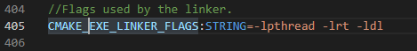
问题5
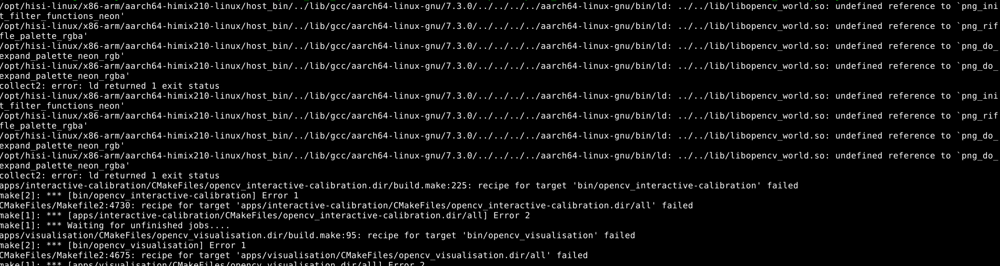
打开\opencv-4.1.0\3rdparty\libpng\pngpriv.h，做如下替换
替换为
问题6
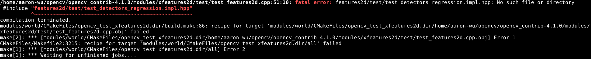
头文件include地址不对，features2d/test/test_detectors_regression.impl.hpp在opencv-4.1.0的opencv-4.1.0/modules/而不是opencv_contrib-4.1.0/modules/
将以下几个文件从opencv-4.1.0\modules\features2d\test目录拷贝到opencv_contrib-4.1.0\modules\xfeatures2d\test目录下
test_descriptors_invariance.impl.hpp
test_descriptors_regression.impl.hpp
test_detectors_invariance.impl.hpp
test_detectors_regression.impl.hpp
test_invariance_utils.hpp
打开\opencv_contrib-4.1.0\modules\xfeatures2d\test\test_features2d.cpp
替换为
打开\opencv_contrib-4.1.0\modules\xfeatures2d\test\test_rotation_and_scale_invariance.cpp
替换为
make install
make install |
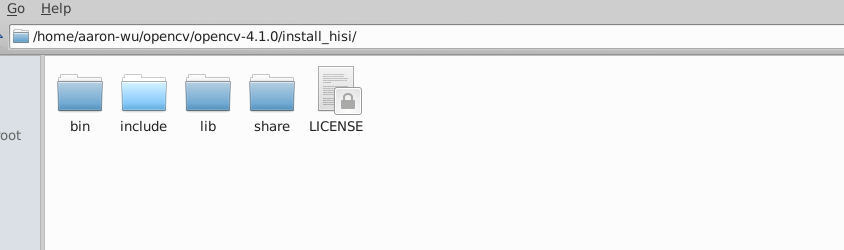
测试库
- 创建以下文件：
cvtColor.cpp
|
CMakeLists.txt
cmake_minimum_required(VERSION 3.0.0 FATAL_ERROR) |
- build&make
mkdir build |
build.sh
cmake -DCMAKE_BUILD_TYPE=Release \ |
- 生成demo拷贝到板子上，同时拷贝
libopencv_world.so到板子的/lib目录下 - 在板子上执行
./demo，成功。
 wechat
wechat alipay
alipay


![海思AI开发 [3]：交叉编译OpenCV](/images/%E6%88%98%E5%8F%8CCG_%E8%BF%9B%E5%85%A5%E5%85%89%E6%98%8E.png)
![CUDA基础 [5]：互斥锁设计](/images/%E6%88%98%E5%8F%8CCG_%E6%9C%8B%E5%8F%8B%E4%B9%8B%E9%97%B4.png)